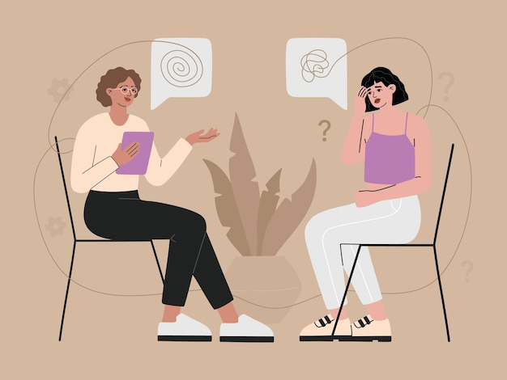

¿Quienes somos?
Somos una red de psicólogos que ofrecemos nuestros servicios a pacientes que tengan un problema en el área de la salud mental, nuestro equipo cuenta con diversos profesionales en salud mental con su respectiva especialidad dependiendo del tema a abarcar, puedes elegir una cita con uno de nuestros psicólogos de manera online y/o presencial.
